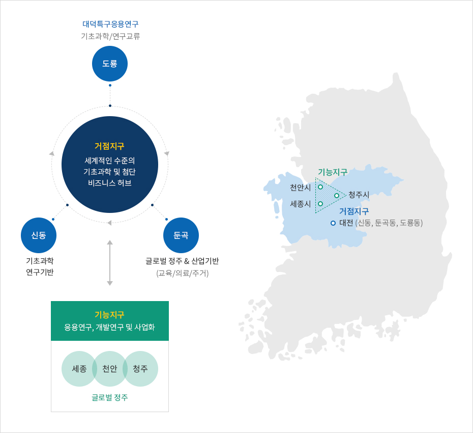
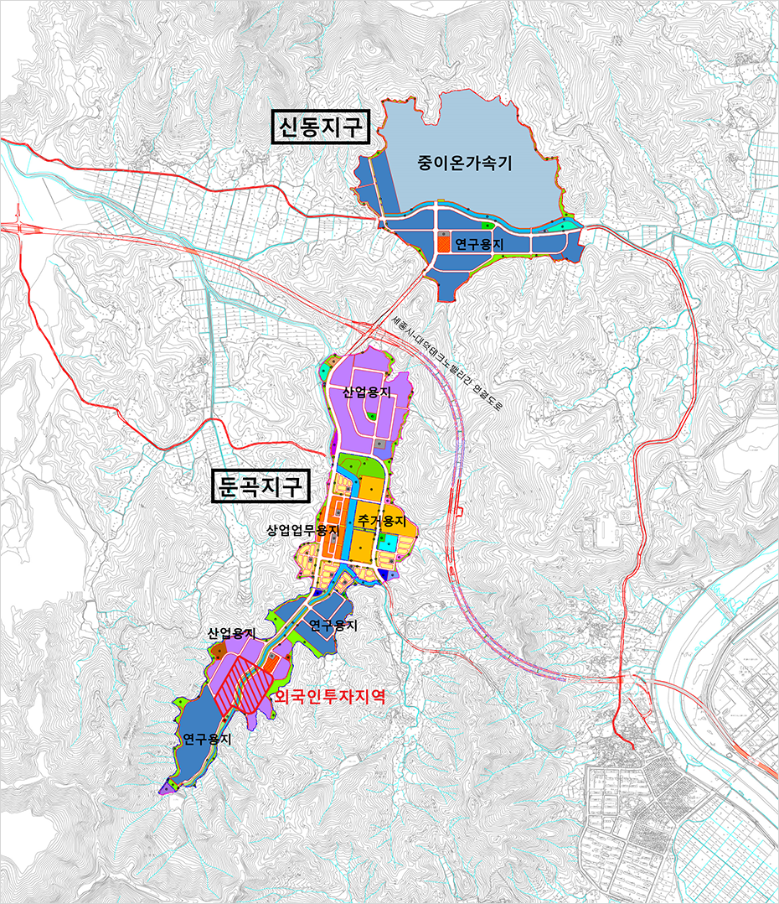
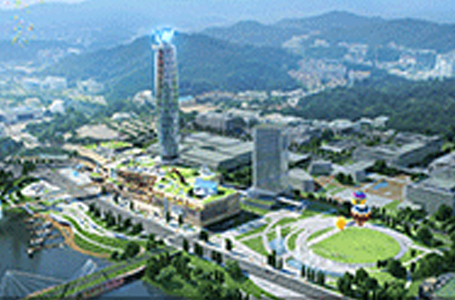
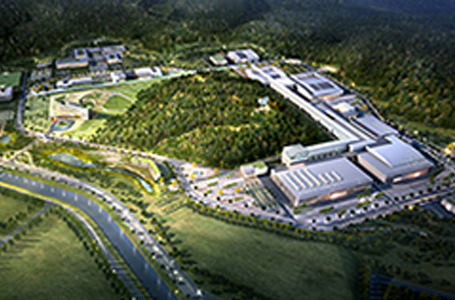
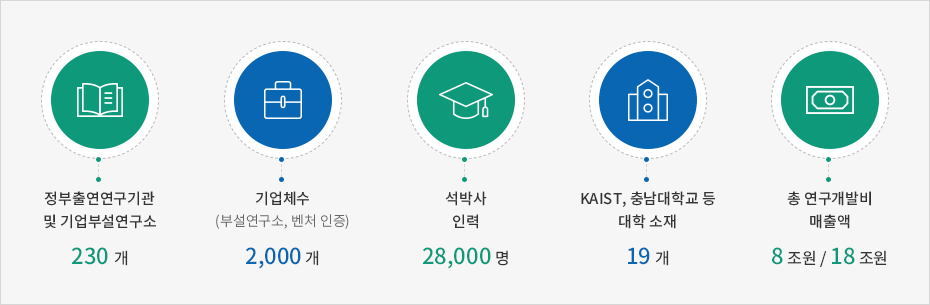
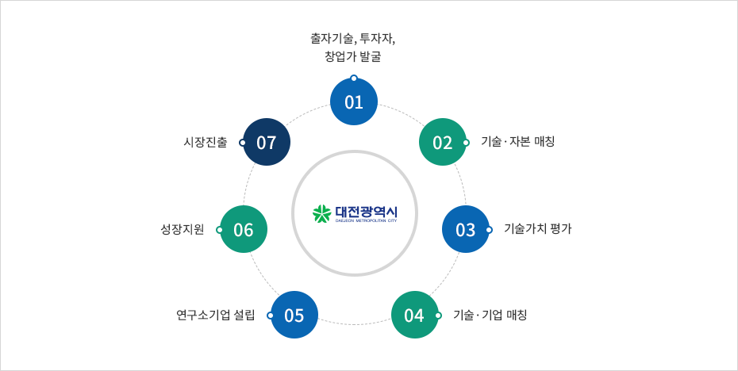
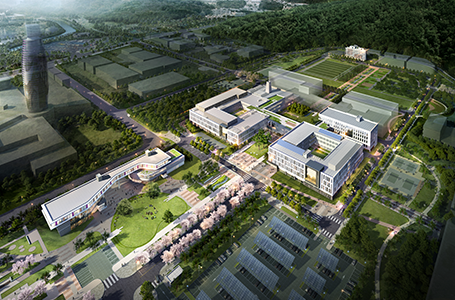
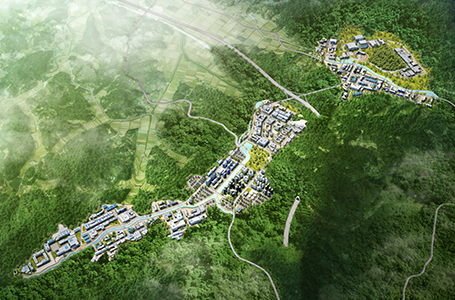

대한민국 최대 R&D허브
- Home
- 투자 강점
- 대한민국 최대 R&D허브
글로벌 기초과학의 새로운 성장거점지 육성
- 기초연구-응용ㆍ개발연구-사업화 모델 확립
- 산ㆍ학ㆍ연 혁신 클러스터 기능강화 목적
- 대전광역시 유성구 신동, 둔곡동 일원에 조성
- 중이온가속기 등 대형 기초연구 시설ㆍ장비 구축으로 지역혁신 클러스터(Innocluster)가 기초과학의 새로운 패러다임 확립



거점지구
- 기초과학연구원 본원과 중이온가속기 등이 설치되어 기초연구분야의 거점기능을 수행
- 글로벌 기초연구거점 기능을 기반으로 국제 과학 교류 및 연구의 중심기능을 수행
기능지구
- 기능지구는 거점지구에서 나온 연구성과를 연계ㆍ확산하는 역할
- 거점지구와 긴밀한 협조체제로 공동연구, 응용연구 및 개발연구, 인력교류, 사업화 등의 활동 수행


사업개요
- 조성기간 : 2012~2021년
- 조성위치 : 유성구 신동, 둔곡동, 도룡동 일원
- 부지면적 : 3,705,000㎡(약 112만평)
- 총사업비 : 2조 1,264억 원
-

기초과학연구원[IBS] 조감도
- 
기초과학연구원
- 세계 최고 수준의 기초과학 연구를 수행하는 과학비즈니스벨트 핵심 연구기관
- 2011년 설립, 2021년까지 단계적으로 50개의 연구단, 상근인력 3,000명 규모의 연구기관으로 육성
- 연구자의 호기심을 바탕으로 창의적이고 모험적인 연구를 지향하며, 전세계 각국에서 모여든 과학자들의 꿈과 열정을 적극 지원
중이온가속기 라온(RAON)
- 수소, 헬륨보다 무거운 지구상 모든 원소의 이온을 빛의 속력에 가깝게 아주 빠른 속도로 가속시키는 장치
- 가속된 중이온을 다시 표적 원자핵에 충돌시키면 희귀한 방사성 동위원소를 대량으로 생성 가능
- 입자들을 이용하여 원자보다 작은 펨토 단위 세계를 탐구하여 새로운 원소를 만들어내거나 물질의 성질 연구 가능
핵물리와 천체물리, 원자력, 생물과 의학, 원자 및 고체물리 등 다양한 과학 기술 분야에서 사용되는 다목적 연구 시설
- 세계 최초로 원형가속기와 선형가속기가 결합된 형태로 구축, 더욱 희귀한 동위원소를 생성 가능
- 우주와 별의 진화과정 연구, 핵의 대칭 에너지 연구, 첨단 암치료기술개발, 생명과학과 DNA 구조 연구 지원
- 암치료, 생필품, 정밀제어, 초전도, MRI, 신소재 개발 등 다양한 분야의 산업과 시장이 활성화
사업개요
- 조성기간 : 2011~2021년
- 조성위치 : 유성구 신동 일원
- 부지면적 : 952,000㎡
- 건축연면적 : 130,144㎡
- 총사업비 : 14,298억 원


체계적인 R&D 사업화 지원


국제과학비즈니스벨트
- 글로벌 기초연구환경과 비즈니스 정주환경 조성
- 위치 : 유성구 신동, 둔곡동, 도룡동
- 면적 : 340만㎡
- 사업기간 : 2014년 ~ 2021년
- 총사업비 : 2조2천억원
- 세계적 수준의 기초연구환경의 거점지구와 응용·개발·사업화를 수행하는 기능지구의 연계
- 
- 